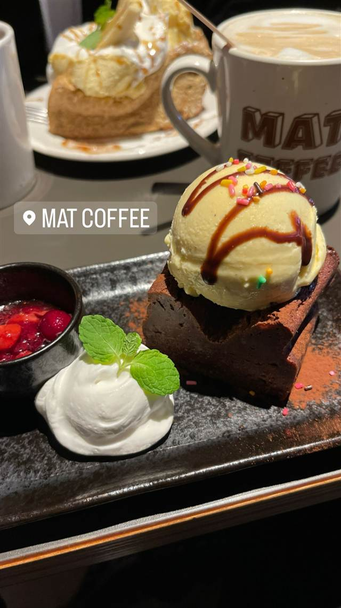

MAT COFFEE
自家焙煎ブレンド「ストラ・ベッキオ」のエスプレッソと手作りブラウニー
MAT COFFEE
渋谷と恵比寿の間、明治通り沿いにあるアメリカンな雰囲気のカフェ。渋谷駅前再開発前は「MUD COFFEE」という名前で桜丘町にあり、移転を機に現在の名前になった。自家焙煎ブレンドのエスプレッソと手作りブラウニーが人気。
TRIVIA
豆知識
- 前身は渋谷駅前再開発前にあった「MUD COFFEE」で、移転を機に改名した
REVIEWS
世間の評判
3.39食べログ
アメリカンダイナー風の雰囲気とボリューム
- オレンジ照明の落ち着いたアメリカンダイナー風の雰囲気を評価する声が多い
- ドリンクは量が多くミルクの種類も選べて、コスパが良いという声が多い
- ケーキがパサパサだったなど料理の質にばらつきがあるという指摘もある
- スタッフの接客対応が不親切だったと感じる人もいるという声がある
食べログ 口コミ172件
| 系譜 | 前身は渋谷・桜丘町にあった「MUD COFFEE」で、駅前再開発に伴い移転改名して現在地に |
|---|---|
| 看板 | 自家焙煎ブレンド「ストラ・ベッキオ」を使ったエスプレッソ、手作りブラウニー |
| こだわり | 冬場はホットチョコレートやお汁粉も提供 |
| どこから | 都心 |
| 営業時間 | 月〜土 11:45-21:00 日 11:45-21:00、11:45-21:00 |
| 場所 | 代官山 東京都渋谷区東2-21-8 |
| メモ | 渋谷と恵比寿の間、明治通り沿いのアメリカンな雰囲気のカフェ。常連同士が挨拶を交わすローカルな雰囲気 |
食べたもの：ブラウニーとパンケーキ
NEARBY
近い店・同じ系統の店
-
 ★
コーヒー 新宿三丁目
AALIYA COFFEE ROASTERS
37年続く本店譲りのフレンチトーストを並ばず味わえる
昼 ¥1,000～¥1,999 夜 ¥1,000～¥1,999
★
コーヒー 新宿三丁目
AALIYA COFFEE ROASTERS
37年続く本店譲りのフレンチトーストを並ばず味わえる
昼 ¥1,000～¥1,999 夜 ¥1,000～¥1,999
-
 ★
コーヒー 保田駅
音楽と珈琲の店 岬
鋸山の湧き水でコーヒーを淹れ、その水は店の外に持ち出せない
昼 ～¥999
★
コーヒー 保田駅
音楽と珈琲の店 岬
鋸山の湧き水でコーヒーを淹れ、その水は店の外に持ち出せない
昼 ～¥999
-
 イタリアン 代官山駅
リストランテASO
昭和初期の洋館で味わう、樹齢300年の欅を望むコース料理
夜 ¥20,000～¥29,999
イタリアン 代官山駅
リストランテASO
昭和初期の洋館で味わう、樹齢300年の欅を望むコース料理
夜 ¥20,000～¥29,999
-
 メキシコ 代官山駅
Hacienda del cielo MODERN MEXICANO
天井高8mの吹き抜けとテラスから東京タワーを望むモダンメキシカン
昼 ¥1,000～¥1,999 夜 ¥4,000～¥4,999
メキシコ 代官山駅
Hacienda del cielo MODERN MEXICANO
天井高8mの吹き抜けとテラスから東京タワーを望むモダンメキシカン
昼 ¥1,000～¥1,999 夜 ¥4,000～¥4,999
-
 メキシコ 代官山
ZEST CANTINA 代官山
恵比寿の大型店が10年越しに代官山で復活したテックスメックス
昼 ¥1,000～¥1,999 夜 ¥3,000～¥3,999
メキシコ 代官山
ZEST CANTINA 代官山
恵比寿の大型店が10年越しに代官山で復活したテックスメックス
昼 ¥1,000～¥1,999 夜 ¥3,000～¥3,999
-
 コーヒー 御成門・浜松町・大門
ル・パン・コティディアン 芝公園店
ベルギー発、1990年創業のベーカリーで東京タワー望むテラス朝食
夜 ¥3,000～¥3,999
コーヒー 御成門・浜松町・大門
ル・パン・コティディアン 芝公園店
ベルギー発、1990年創業のベーカリーで東京タワー望むテラス朝食
夜 ¥3,000～¥3,999
ONSEN & SAUNA